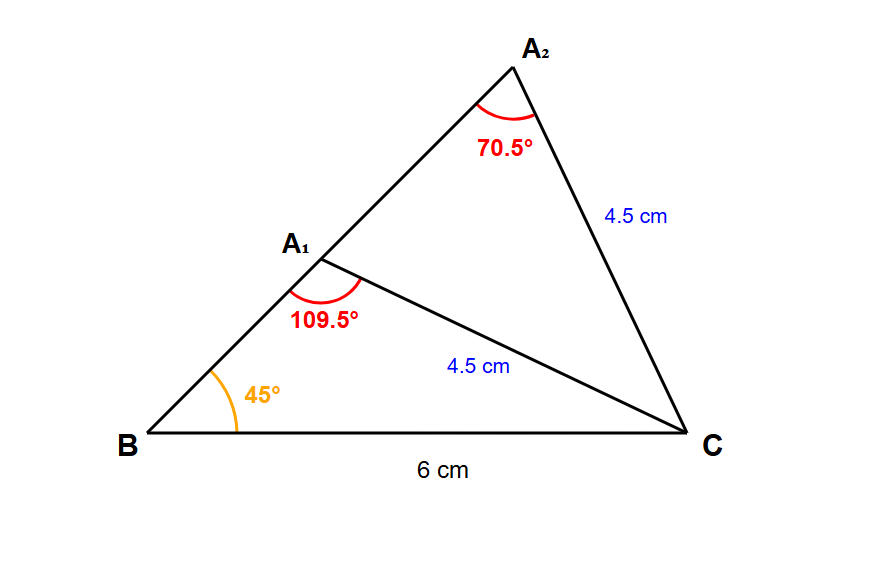

Section 6C: Finding Two Possible Angles using sine rule
Finding Two Possible Angles using sine rule
When the sine rule produces two possible solutions
Question 1: Two possible angles
In △ABC, BC = 6 cm, AC = 4.5 cm and ∠ABC = 45°. a Calculate the two possible values of ∠BAC. b Draw a diagram to illustrate your answers.
Solution:
📐 The Sine Rule - Ambiguous Case
When using the Sine Rule to find an angle, two solutions may exist:
• First solution: Use sin−1 to find the acute angle
• Second solution: 180° − (acute angle) gives the obtuse angle
This works because: sin θ = sin (180° − θ)
Part (a): Calculate the two possible values of ∠BAC
Step 1: Apply the Sine Rule and solve for sin A
Using the pairs:
• Side BC = 6 cm is opposite angle A (∠BAC)
• Side AC = 4.5 cm is opposite angle B (∠ABC = 45°)
Using:
BCsin A
=
ACsin B
6sin A
=
4.5sin 45°
6 × sin 45° = 4.5 × sin A
sin A =
6 × sin 45°4.5
sin A =
6 × 0.7071...4.5
sin A = 0.9428... A = sin−1(0.9428...) A = 70.5° (1 d.p.)
Step 2: Find the second solution (obtuse angle)
Using sin θ = sin (180° − θ): A = 180° − 70.5° A = 109.5°
Both angles are valid because sin 70.5° = sin 109.5°
Part (b): Draw a diagram to illustrate your answers
Step 3: Diagram showing both possible triangles

Two triangles are possible: BA₂C with acute angle 70.5° at A₂, and BA₁C with obtuse angle 109.5° at A₁. Both share base BC and have the same side lengths AC = 4.5 cm and angle B = 45°.
✨ Final Answer: (a) ∠BAC = 70.5° or ∠BAC = 109.5° (b) Diagram shows both possible triangles ✨
Question 2: Finding the correct angle
Triangle ABC is such that AB = 4 cm, BC = 6 cm and ∠ACB = 36°. Show that one of the possible values of ∠ABC is 25.8° (to 3 s.f.). Using this value, calculate the length of AC.
Solution:
📐 The Sine Rule - Ambiguous Case
When using the Sine Rule to find an angle, two solutions may exist:
• First solution: Use sin−1 to find the acute angle
• Second solution: 180° − (acute angle) gives the obtuse angle
This works because: sin θ = sin (180° − θ)
Part 1: Show that ∠ABC = 25.8° (to 3 s.f.)
Step 1: Apply the Sine Rule to find ∠BAC and check if it gives ∠ABC = 25.8°
Using the pairs:
• Side AB = 4 cm is opposite angle C (∠ACB = 36°)
• Side BC = 6 cm is opposite angle A (∠BAC)
Using:
ABsin C
=
BCsin A
4sin 36°
=
6sin A
4 × sin A = 6 × sin 36°
sin A =
6 × sin 36°4
sin A =
6 × 0.5878...4
sin A = 0.8817... A = sin−1(0.8817...) A = 61.845...°
Now calculate ∠ABC using sum of angles in a triangle:
∠ABC = 180° − ∠BAC − ∠ACB
∠ABC = 180° − 61.845...° − 36°
∠ABC = 82.155...°
∠ABC = 82.2° (to 1 d.p.)
⚠️ This value (82.2°) is NOT equal to 25.8°. Since the Sine Rule can have two possible solutions for an angle (ambiguous case), we need to try the second possible value of ∠BAC.
Step 2: Use the second possible value of ∠BAC to find ∠ABC
Using sin θ = sin (180° − θ): A = 180° − 61.845...° A = 118.155...°
Now calculate ∠ABC using sum of angles in a triangle:
∠ABC = 180° − ∠BAC − ∠ACB
∠ABC = 180° − 118.155...° − 36°
∠ABC = 25.845...°
∠ABC = 25.8° (to 3 s.f.) ✓
✓ We have successfully shown that one of the possible values of ∠ABC is 25.8° (to 3 s.f.)
Part 2: Calculate the length of AC using ∠ABC = 25.8°
Step 3: Use the Sine Rule to find AC
Using the pairs:
• Side AC is opposite angle B (∠ABC = 25.845...°)
• Side AB = 4 cm is opposite angle C (∠ACB = 36°)
Using:
ACsin B
=
ABsin C
ACsin 25.845...°
=
4sin 36°
AC =
4 × sin 25.845...°sin 36°
AC =
4 × 0.4358...0.5878...
AC = 2.967... cm
AC = 2.97 cm (to 3 s.f.)
We use the Sine Rule with the angle ∠ABC = 25.8° to find the length of AC.
✨ Final Answer:
∠ABC = 25.8° (shown) ✓
AC = 2.97 cm ✨
Question 3: Finding largest angles in two triangles
Triangle ABC has sides AB = 4.5 cm, BC = 6.8 cm, and angle C = 30°.
There are two possible triangles that can be drawn with these measurements.
Find the largest angle in each of these two triangles.
Solution:
📐 The Sine Rule - Ambiguous Case
When using the Sine Rule to find an angle, two solutions may exist:
• First solution: Use sin−1 to find the acute angle
• Second solution: 180° − (acute angle) gives the obtuse angle
This works because: sin θ = sin (180° − θ)
Step 1: Apply the Sine Rule to find both possible values of ∠BAC
Using the pairs:
• Side AB = 4.5 cm is opposite angle C (∠ACB = 30°)
• Side BC = 6.8 cm is opposite angle A (∠BAC)
Using:
ABsin C
=
BCsin A
4.5sin 30°
=
6.8sin A
4.5 × sin A = 6.8 × sin 30°
sin A =
6.8 × sin 30°4.5
sin A =
6.8 × 0.54.5
sin A = 0.7556... A = sin−1(0.7556...) A = 49.1° (1 d.p.)
Using sin θ = sin (180° − θ): A = 180° − 49.1° A = 130.9°
Due to the ambiguous case, ∠BAC has two possible values: 49.1° (acute) and 130.9° (obtuse)
Step 2: Calculate ∠ABC for both triangles
Sum of angles in a triangle = 180°
∠ABC = 180° − ∠BAC − ∠ACB